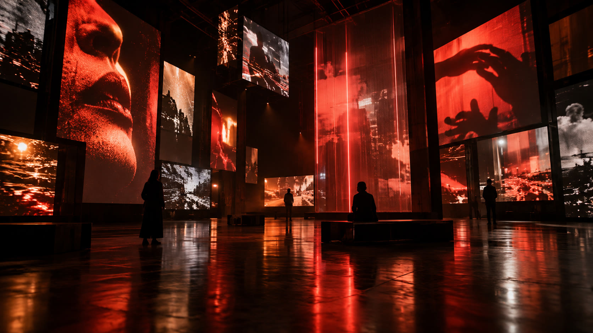

01Estudio digital · Sistema en línea
Estrategia,imagen ycódigo.
Somos SONYLUM. Unimos estrategia, código, inteligencia artificial y producción audiovisual para convertir ideas en experiencias que funcionan.
02Marcas en órbita
Un ecosistema.Cuatro miradas.

01 / DigitalSONYLUMWeb, UX, branding, SEO, automatización e IA. 02 / ContentCREANDO CONTENIDOSProducción vertical, campañas y piezas que se mueven.
02 / ContentCREANDO CONTENIDOSProducción vertical, campañas y piezas que se mueven.
 03 / ExperiencesLOCALBABuenos Aires receptivo, recorridos y mirada local.
03 / ExperiencesLOCALBABuenos Aires receptivo, recorridos y mirada local.
 04 / WeddingsTEFILMOBodas en vertical, invitaciones y recuerdos vivos.
04 / WeddingsTEFILMOBodas en vertical, invitaciones y recuerdos vivos.
03Capacidades · Sin cajitas
Pensamos elsistema.Después lo hacemos.
- 01
Producto digital
Arquitectura, UX/UI, desarrollo, performance y deploy.
- 02
Inteligencia artificial
Prompts de precisión, agentes, automatizaciones y flujos creativos.
- 03
Dirección visual
Concepto, cámara, narrativa, motion y producción de contenido 9:16.
- 04
Marca y crecimiento
Identidad, mensajes, SEO/SEM y activación comercial.
04Proyectos
Ideas quesalieronde la pantalla.
- Imp / ExpTERRACOMEXPlataforma e identidad digital.01
- DirectorioRADAR COMERCIALProducto, búsqueda y territorio.02
- GastronomíaFILOMENAPresencia web y conversión.03
- RestaurantBARAKUSMarca, menú y experiencia.04
- TurismoCHECK-IN PATAGONIARediseño premium y reservas.05
- EventoLA INVITACIÓNUna boda convertida en interfaz.06
05Canal directo · Buenos Aires
Hagamos algoque no parezcauna plantilla.
Contanos qué querés mover: una marca, una web, una campaña o una idea todavía medio salvaje.
Abrir WhatsApp